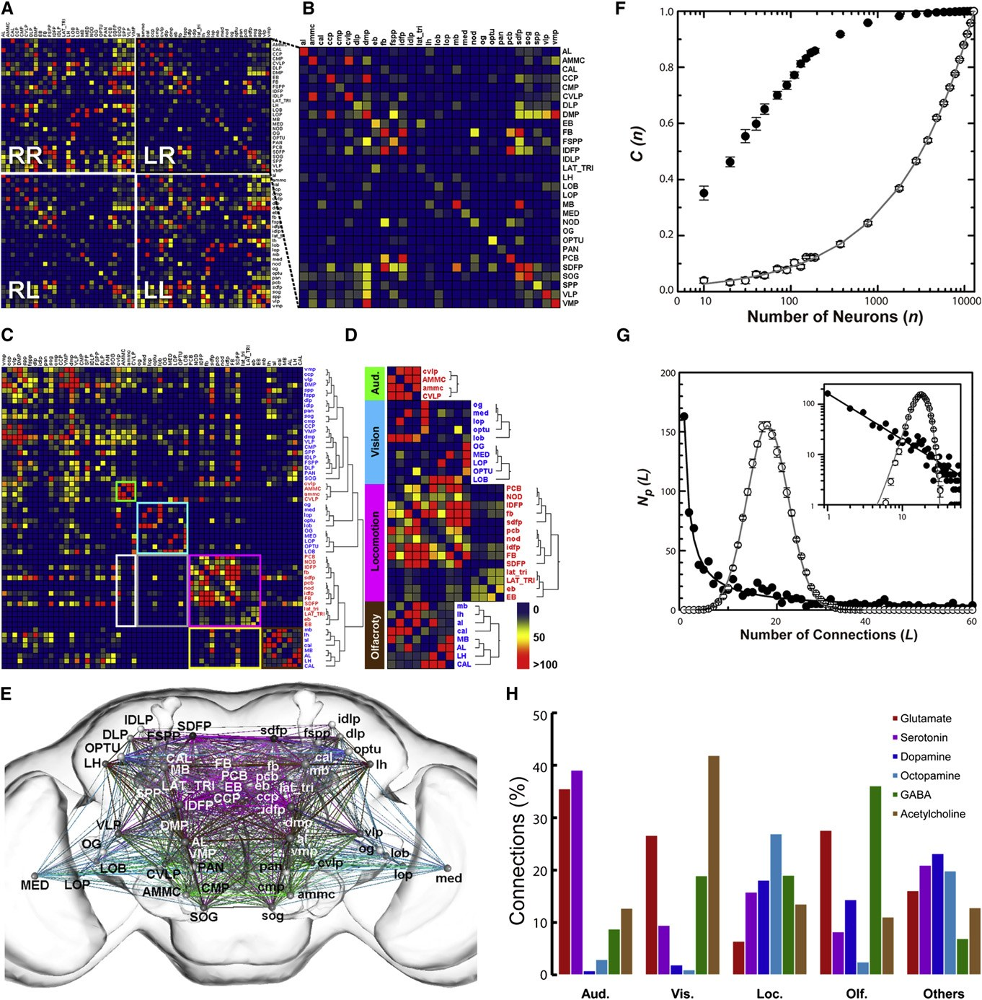

What Is an LPU
To analyze a brain, you first have to decide what a "brain region" is. This episode reads exactly one paper: the 2011 FlyCircuit paper, and the thing it proposed — the LPU (local processing unit). How it turned "brain region" from an anatomical noun into a definition that can be run automatically and can be overturned; where the number 41 comes from; and where the paper itself says the definition is loose.
 Watch the lesson · 13 min 28 s · open on YouTube ↗
Watch the lesson · 13 min 28 s · open on YouTube ↗
How to read this page
Why ask "what is an LPU"
EP04 used the "FlyCircuit database" page to show how a topic page becomes a course. This episode uses the same method on a narrower, harder subject: the central concept of the knowledge base's brain-region-parcellation topic page — the LPU.
Why does it deserve a whole episode? Because it is the thing most easily waved through as background in this line of research. Later papers open with "49 nodes" and "LPU-level modules," but few readers go back and ask: how were those 41 units arrived at, and would a different criterion change them? That is exactly what you should check first in any paper that uses "brain region" as its unit — because how you parcellate determines what structure you can see.
This episode reads exactly one paper: Chiang et al., Current Biology 2011.
The material is the matching knowledge-base entry 2011-Chiang-FlyCircuit, plus the passages in the topic page
brain-region-parcellation that come from this paper.
How later papers cited and revised the LPU is left for another episode — what this one does is read one concept in one paper all the way down.
There is a table at the foot of the page showing where each lesson came from.
To analyze a brain, you first have to decide what a "brain region" is. This page covers how this line of research defines brain regions, why it does not simply carry over the anatomical parcellation, and how that definition was later tested against its own data.
The problem: who decides where a brain region ends
Traditionally, brain regions are parcellated by morphological boundaries visible in staining. The fly brain has some fifty-odd neuropils — each a block of dense fibers whose boundary can be recognized from shape alone, with a naming scheme that has been in use for many years. The standard brain in the 2011 paper resolves 58 morphologically distinguishable neuropils.
The trouble is that morphological boundaries do not necessarily correspond to functional units. Two adjacent neuropils may be two halves of one processing circuit; one large neuropil may conceal several small units operating independently.
If the point of the analysis is to understand how signals flow through the brain, using morphology as the parcellation criterion amounts to cutting the brain up by a criterion unrelated to the question, before the question has even been asked. Every network analysis that follows is built on that cut — the nodes are it, the connectivity matrix is it, the modules are it. Cut it wrong and everything downstream is wrong in a way you cannot see.
If the point of the analysis is to understand how signals flow through the brain, then using morphology as the parcellation criterion amounts to cutting the brain up by a criterion unrelated to the question before the question has even been asked. What this line of research does instead is switch to a criterion that can be automated and verified.
Two kinds of neuron: LN and PN
Before you can switch criteria, you need something to use as a criterion. The 2011 paper uses a very simple classification:
- LN (local neuron) — the entire neuron stays inside one brain region, like a city street
- PN (projection neuron) — connects two or more brain regions, like an interstate highway
Why is this classification even possible? Because the earlier work had already turned every neuron into something you can compute with: once a neuron is registered into the standard brain, how many voxels its fibers occupy in each of the 58 neuropils is recorded and compressed into a 58-dimensional vector. Whether a neuron is an LN or a PN is just the shape of that vector — concentrated in one bin, or spread across several.
From here on, "brain region" becomes a question you can run on data, instead of one that needs somebody looking at sections and deciding.

- The standard brain resolves 58 morphologically distinguishable neuropils — 2011 entry, Methods · standard brain generation
- Spatial distribution encoded as an n-dimensional statistical distribution (n = number of neuropils), which is the base data structure for every later clustering and connectivity statistic — 2011 entry, Methods · morphological quantification
- Of all registered single neurons, about 26% are LPU-LNs — 2011 entry, Results · LPUs and hubs
The definition: does it have a local circuit of its own
With LNs and PNs in hand the criterion follows: if a brain region contains a group of LNs of its own interweaving inside it, that region has "local" information processing, and is therefore an independent processing unit — an LPU.
The intuition: a place with only highways running through it and no city streets is a transfer station, not a city. Having a street network of its own means what arrives gets worked on rather than passed straight through.
The full definition the paper writes down has three conditions:
- It possesses an LN population of its own
- Those fibers are completely restricted to that region
- It is contacted by at least one neural tract (so it has a definite line to the outside — it is not an island)
Conversely, a few brain regions have no LN population of their own — only large numbers of PN terminals passing through, with no local processing. The paper calls these hubs.
The significance of this criterion is that it turns "brain region" from an anatomical noun into an operational definition — give me a batch of registered neurons, run the criterion, and the blocks come out by themselves. And it is falsifiable: if a different dataset or a different threshold yields a different number of LPUs, then that number is "the result of an operation at the current resolution," not a converged ground truth.
How it was actually run: seven steps
That is the definition. How do you actually find LPUs among sixteen thousand neurons? The paper's Methods section writes it as seven steps:
- Count the number of times LN populations pass through each voxel
- Identify hot spots using the upper quartile of a five-number summary
- Determine subdivisions by cluster analysis
- Recruit LNs into each subdivision
- Define the boundary of each candidate LPU from the LN clusters
- Compute the c value describing the spatial distribution of LN fibers within the LPU
- Verify whether the region has its own long-range neural tracts
Two places in those seven steps are worth stopping at.
The "upper quartile" in step 2 is a threshold. Change that number and the extent of the hot spots changes, and the boundaries of the candidate LPUs change with it. The paper reports no sensitivity analysis for this threshold — lesson 07 comes back to that.
Step 7 is external validation. The first six steps all move around inside the LN distribution; step 7 steps outside it and demands that the region have long-range tracts of its own — using an independent source of evidence (which way the tracts run) to confirm that what the first six steps found is not a statistical artifact. This is what keeps the whole criterion from being merely the output of a clustering algorithm.
One by-product deserves its own paragraph: the VLP was split into a dorsal and a ventral LPU, the only case of two LPUs inside a single neuropil. The split rests on three things: the cell bodies of the two LN groups are in separate locations, their fiber projections are segregated from each other, and each has characteristic long-range tracts communicating with different partners.
The splitting of the VLP into dorsal and ventral LPUs shows that this criterion can indeed discover substructures missed by traditional anatomical partitioning. Conversely, hubs lacking LNs are no longer treated as units homogeneous with other brain regions but are recognized as transfer nodes of a different nature.

41 LPUs and four pairs of hubs
Run the criterion across the brain and you get 41 LPUs: 19 paired neuropils, plus 3 unpaired ones on the midline (PCB, FB, EB). Those three midline units are a special case — most of their LNs send bilateral fibers, so although they are structurally unpaired they still function as one unit.
Four further pairs of neuropils lack a segregated LN population and are classed as hubs:
| Hub | Presumed role |
|---|---|
| OPTU (optic tubercle) | The main hub for interhemispheric communication; contains many commissural fibers |
| Nod (noduli) | Information-association hub, holding large numbers of ipsilateral PN terminals |
| OG (optic glomerulus) | As above |
| IDLP | Irregular in shape; no single neuron innervates more than 30% of it — possibly a cross-regional pathway |
For two of these hubs the paper offers a very honest possibility: OG and Nod may simply be too small in volume to accommodate extra LNs. If that is so, then "no local processing" is not a property of these two regions but a consequence of their size. The observation comes attached to an unanswered question: what is the minimum number of LNs needed to form a necessary network motif?
Overlay the LPUs and the hubs and they nearly fill the entire brain — which is also indirect evidence that the sampling left no large blank areas (consistent with the 93.03% voxel coverage reported in the main text).

- 41 LPUs = 19 paired neuropils + 3 unpaired midline ones (PCB, FB, EB) — 2011 entry, Results
- Four pairs of hubs: OPTU, Nod, OG, IDLP — same section; but the abstract says "6 hubs," an internal inconsistency
- LPU-LNs are 26% of all registered neurons — in other words nearly three quarters of neurons are cross-regional PNs; the LPU is defined out of that 26%
- Spatial coverage: 93.03% of voxels are occupied by at least three registered neurons; 0.79% are not covered at all
Once you have units: the connectivity matrix and four modules
With the LPUs defined, network analysis has its nodes. How is a connection counted? Directly: if the fibers of one PN enter both region A and region B, that counts as a connection between A and B. Tally every neuron and you get a matrix of who connects to whom and how densely. (Note that all LPU-LNs are excluded — by definition they do not cross regions.)
Hierarchical clustering of that matrix brings out four densely interconnected families of LPUs, and they line up with known function: auditory, visual, locomotor, olfactory.
That result is itself a form of validation: the team did not tell the algorithm in advance which regions have to do with hearing. Those clusters grew out of the connection numbers by themselves, yet they agree with decades of accumulated functional anatomy. The criterion is new and the answer matches old knowledge — which is the kind of evidence a new method needs most.
The matrix says two more things: connection density within a hemisphere is markedly higher than across the midline (brains prefer to process locally); and on the paths from the sensory modules to the locomotor module, the olfactory module has more direct connections than the auditory or visual ones.

A search in FlyCircuit returns about 400 neurons connecting AMMC (the auditory region) with some 28 brain regions. Setting aside the dense connection between the left and right AMMC, about 20% of AMMC projection neurons connect bilaterally to a region called CVLP. That yields a hypothesis you can take into the lab: CVLP may be the next station for processing AMMC information.
This is the capability the LPU adds: a connectivity map does not hand you the answer, but it turns "a needle in a haystack" into "these few needles are worth testing first."
Where this definition is loose
The last lesson goes back to the sentence from lesson 03: the LPU is a definition that can be overturned by its own data. This is not an outsider's criticism — every line below is written in the paper's own Discussion and limitations, and the knowledge-base entry records them one by one.
| Where it is loose | What is going on | Status |
|---|---|---|
| The threshold in the criterion | The "upper quartile" of step 2 and the c value of step 6 set the boundaries. How sensitive the number 41 is to that threshold is not quantified; the authors concede some LPUs may still be subdivided further — the VLP is the precedent | No sensitivity analysis reported |
| How many hubs there are | The abstract states "six hubs"; the main text lists four pairs (OPTU, Nod, OG, IDLP). Four pairs would be eight, which does not match the six | ⚠️ Internal inconsistency in one paper; needs checking against Figure 5C and the supplementary data |
| Mapping onto the 58 neuropils | The full correspondence between the 41 LPUs and the 58 anatomical neuropils is not tabulated. In the plus/minus table of Figure 5A, some items (Cal, MB, Lat Tri) are counted as LPUs in merged form | Needs item-by-item checking |
| Information lost in skeletonization | Once a neuron is compressed into a 58-dimensional vector, branching topology, fiber direction and terminal density inside a neuropil are all lost, irreversibly. LPU boundaries are drawn in a space that has already lost that information | Intrinsic cost of the method |
| "Connection" is inferred, not observed | The connectivity matrix of lesson 06 rests on spatial co-occupancy: two neurons' fibers enter the same neuropil, so contact is presumed possible. Whether a synapse exists, its direction and its number are all unknown; the result is an undirected graph | Ceiling of optical resolution |
Fuzzy boundary of the LPU criterion. The criterion relies on a mathematical definition of "LN fibers entangling with each other" and the c value, but the authors themselves concede that some LPUs may still be subdivided further (as with the precedent of the VLP). Hence the number 41 should be regarded as an operational result at the current resolution, not a converged true value.
There is one more loose point specific to the hubs, mentioned back in lesson 05: the paper itself says OG and Nod may simply be too small in volume to hold extra LNs. If that is right, the category "hub" contains two different things — genuine transfer stations that do no local processing, and small regions that would but cannot fit it in. The criterion cannot separate them, because it only asks "are there LNs of its own," never "why not."
What this course taught
Seven lessons on one noun. Not on how important it is, but on how it was defined, from what data, by what criterion, producing what numbers, tested how, and where it is currently loose. Those six things are worth asking of any concept you intend to use as a unit of analysis.
Three reflexes about the LPU
- It is a definition, not a discovery"41 LPUs" is the output of one criterion on one dataset. Change the threshold or the data and the number changes — that is a property of an operational definition, not a defect.
- Know what it measuresThe LPU measures "where is there local processing," defined by the distribution of LNs. It does not measure which neurons belong to the same group, and it does not measure synapses. Before using it to answer a different question, go back and look at the criterion.
- Nearly three quarters of neurons are not in itLPU-LNs are only 26%. The LPU is a boundary drawn out of that 26%, while most neurons in the brain are cross-regional PNs — they pass through those boundaries and are not defined by them.
Questions to think about
- If the threshold in step 2 of lesson 04 (the upper quartile) were changed to the median or the ninetieth percentile, which way would the number 41 move? What analysis would you have to design to answer "how sensitive is the LPU count to the threshold"?
- The paper suggests OG and Nod "may simply be too small to accommodate extra LNs." If that is true, the category "hub" contains two different things. How would you separate them?
- The LPU is defined out of the 26% that are LNs, while nearly three quarters of neurons are cross-regional PNs. If you parcellated the brain using PN connection patterns instead, would you expect the same 41 units? What question is each parcellation answering?
How this course came out of the knowledge base
| Lesson | Source material | What the agent did |
|---|---|---|
| 00 | Topic-page introduction | Rewrote it into "why devote an episode to one noun" |
| 01 | Topic page, "The problem: who decides where the boundary lies" | Added the inference that a wrong cut propagates invisibly |
| 02 | 2011 entry, general-audience article "From neurons to blocks" + Methods · morphological quantification | Connected LN/PN to the 58-dimensional data structure; added the entry's Interpretation warning |
| 03 | Topic page, "LPU: parcellating by whether it has a local circuit" + entry, Methods · operational definition | Listed the three conditions; added the city-street analogy |
| 04 | Entry, Methods (seven steps) + Discussion (the VLP case) | Flagged step 2 as a threshold and step 7 as external validation; pulled the VLP out for its own treatment |
| 05 | Entry, Results · LPUs and hubs | Built the hub table; left the 26% as a thread for lesson 07 |
| 06 | Entry, Results · brain-wide wiring diagram + the AMMC application | Emphasized the validation logic that the algorithm did not know the labels beforehand |
| 07 | Entry, Problems and limitations + Open questions | Organized them into a table; all of it from the authors' own admissions |
| Questions | Entry, Open questions | Picked three and rewrote them as questions |
The same division of labor as EP04: the agent lays out the structure, links back to sources, and rewrites the register; the human decides what to teach, how deep to go, and which sentence is the point. In this episode the human decided three things: narrow the subject to a single concept, read only the 2011 paper, and make "operational definition" the spine of the whole thing.
Figure credits All four figures on this page are from Chiang et al. 2011 (extracted for the knowledge-base entry 2011-Chiang-FlyCircuit), each labeled with its original figure number;
copyright remains with the publisher and authors (Current Biology / Elsevier). Reproduced here for teaching.
Check yourself
Ten multiple-choice questions on the LPU as a definition — what the criterion is, where the numbers come from, how it was validated, and where its edges are. Each answer is marked immediately, with the reasoning.